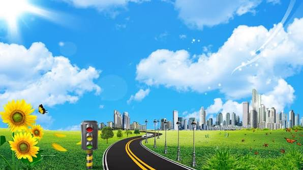
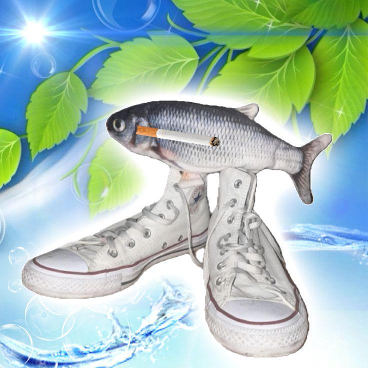
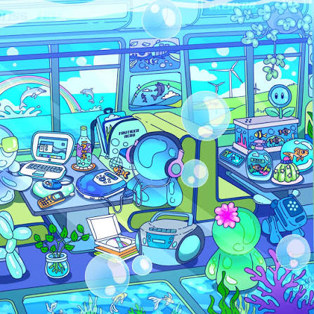

Un vistazo al optimismo digital donde los cielos azules, las burbujas y la naturaleza se funden con interfaces translúcidas.
Explorar Archivos WebVisita otros rincones dedicados a preservar la memoria y el diseño de esta época dorada:
Una recopilación masiva de imágenes, fondos de pantalla, sonidos de inicio de Windows Vista y estética corporativa clásica.
Conoce a fondo la historia, los subgéneros (como Y2K y Metro), los diseñadores, las paletas de colores y la filosofía detrás de este estilo visual.

[ciudades que demostraban un futuro en el que la tecnologia y la naturaleza comvivian juntos]Arquitectura futurista rodeada de rascacielos ecológicos y cielos despejados con nubes cúmulus[cite: 4].

[meme]Icónicos protectores de pantalla interactivos y estética acuática surrealista de los 2000s[no son los peces de estilo frutiger solo es un meme].

[PFP de avatares de el sitio web MSG]Avatares translúcidos, tecnología nostálgica y esferas llenas de brillo[cite: 2].